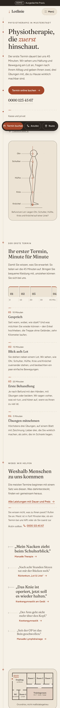
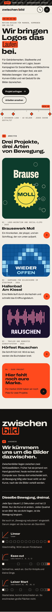
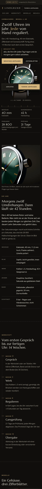
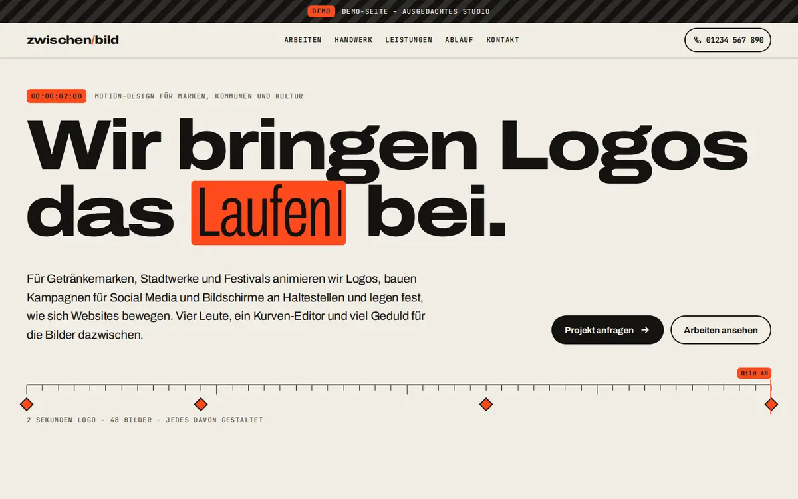
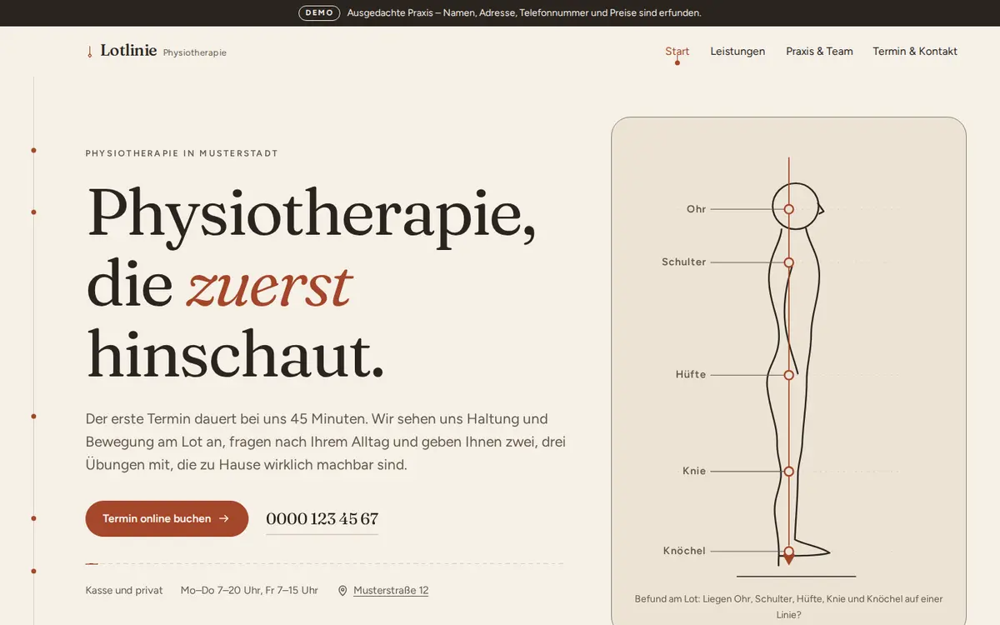
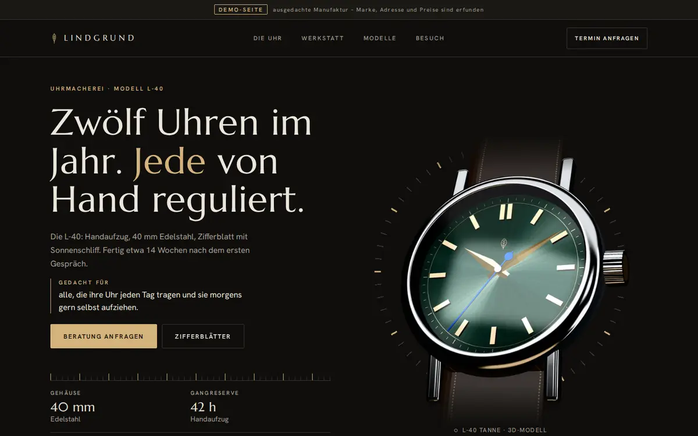

<meta name="viewport" content="width=device-width, initial-scale=1, viewport-fit=cover">
<title>OQ Hero-Varianten</title>
<style>
@font-face { font-family: "Instrument Serif"; font-weight: 400; font-display: swap; src: url("fonts/instrument-serif.woff2") format("woff2"); }
@font-face { font-family: "Instrument Serif"; font-style: italic; font-weight: 400; font-display: swap; src: url("fonts/instrument-serif-kursiv.woff2") format("woff2"); }
@font-face { font-family: "Geist"; font-weight: 100 900; font-display: swap; src: url("fonts/geist.woff2") format("woff2"); }
/* Bewusst eine Welt: dunkles Atelier, ein Lichtakzent. Einheitlich dunkel, unabhängig vom Theme des Betrachters. */
:root {
  --grund: #0a0b0d; --grund-2: #121317; --text: #f1efe9; --leise: #a8a59d; --linie: #2a2b30; --licht: #b9c3ff; --licht-tief: #2a3cc2;
  --display: "Instrument Serif", "Times New Roman", serif; --sans: "Geist", Arial, sans-serif;
  color-scheme: dark;
}
* { box-sizing: border-box; }
body { margin: 0; background: var(--grund); color: var(--text); font: 400 1rem/1.6 var(--sans); -webkit-font-smoothing: antialiased; }
a { color: inherit; }
.umschalter {
  position: sticky; top: env(safe-area-inset-top, 0px); z-index: 50; display: flex; gap: .4rem; justify-content: center; align-items: center; flex-wrap: wrap;
  padding: .6rem 1rem; background: color-mix(in srgb, var(--grund) 82%, transparent); backdrop-filter: blur(10px); border-bottom: 1px solid var(--linie);
  font-size: .8125rem;
}
.umschalter span { color: var(--leise); margin-inline-end: .4rem; letter-spacing: .12em; text-transform: uppercase; font-size: .7rem; }
.umschalter a { display: inline-flex; align-items: center; min-height: 40px; padding: .3rem .9rem; border: 1px solid var(--linie); border-radius: 999px; text-decoration: none; }
.umschalter a:hover { border-color: var(--leise); }
.variante { scroll-margin-top: 3.6rem; position: relative; min-height: calc(100svh - 3.5rem); overflow: hidden; border-bottom: 1px solid var(--linie); isolation: isolate; }
.marke-v { z-index: 6 !important; position: absolute; top: 1.25rem; right: 1.25rem; z-index: 5; padding: .25rem .7rem; border: 1px solid var(--linie); border-radius: 999px; font-size: .75rem; color: var(--leise); letter-spacing: .08em; }
.kopf { position: absolute; inset: 0 0 auto; z-index: 4; display: flex; justify-content: space-between; align-items: center; padding: 1.25rem clamp(1rem, 4vw, 3.5rem); padding-right: 9rem; }
.logo { font: 400 1.6rem/1 var(--display); letter-spacing: -.01em; }
.logo i { color: var(--licht); font-style: normal; }
.knopf { display: inline-flex; align-items: center; gap: .6rem; min-height: 48px; padding: .75rem 1.4rem; border-radius: 999px; background: var(--text); color: var(--grund); text-decoration: none; font-weight: 550; font-size: .9375rem; transition: transform .3s cubic-bezier(.2,.8,.2,1); }
.knopf.leer { background: none; color: var(--text); border: 1px solid color-mix(in srgb, var(--text) 35%, transparent); }
.knopf:hover { transform: translateY(-2px); }
.ueber { display: flex; align-items: center; gap: .9rem; margin: 0 0 1.4rem; font-size: .72rem; letter-spacing: .22em; text-transform: uppercase; color: var(--leise); }
.ueber::before { content: ""; inline-size: 2.2rem; block-size: 1px; background: currentColor; }
@media (prefers-reduced-motion: reduce) { *, *::before, *::after { animation: none !important; transition: none !important; } }

/* ---------- A: Werkstück ---------- */
.a { display: grid; align-items: center; padding: 6.5rem clamp(1rem, 4vw, 3.5rem) 3rem; background:
  radial-gradient(60rem 40rem at 72% 58%, color-mix(in srgb, var(--licht-tief) 22%, transparent), transparent 70%),
  linear-gradient(180deg, transparent 55%, rgba(0,0,0,.6)), var(--grund); }
.a::before { content: ""; position: absolute; inset: auto 0 0; block-size: 38%; z-index: -1; background: linear-gradient(180deg, transparent, color-mix(in srgb, #3a2a1c 40%, transparent)); }
.a-raster { display: grid; gap: 3rem; align-items: center; max-width: 82rem; margin-inline: auto; width: 100%; }
.a h1 { margin: 0; font: 400 clamp(3.1rem, 1.4rem + 6.4vw, 7.4rem)/.92 var(--display); letter-spacing: -.025em; text-wrap: balance; }
.a h1 em { color: var(--licht); }
.a .satz { max-width: 30rem; margin: 1.6rem 0 2.2rem; font-size: 1.125rem; color: var(--leise); }
.a .satz b { color: var(--text); font-weight: 500; }
.aktionen { display: flex; flex-wrap: wrap; gap: .75rem; }
.a-geraet-buehne { position: relative; display: grid; justify-items: center; gap: 1.1rem; }
.geraet {
  position: relative; inline-size: min(19rem, 72vw); aspect-ratio: 9 / 19.2; padding: .6rem; border-radius: 2.9rem;
  background: linear-gradient(145deg, #3b3c42, #111216 40%, #26272c); box-shadow: 0 0 0 1px #4a4b52 inset, 0 3rem 6rem -2rem rgba(0,0,0,.9), 0 0 9rem -3rem color-mix(in srgb, var(--licht) 55%, transparent);
  transform: rotate(-4deg);
}
.geraet::after { content: ""; position: absolute; inset: .6rem; border-radius: 2.35rem; background: linear-gradient(115deg, rgba(255,255,255,.14), transparent 32%); pointer-events: none; }
.schirm { position: relative; block-size: 100%; border-radius: 2.35rem; overflow: hidden; background: #000; }
.schirm::before { content: ""; position: absolute; z-index: 3; top: .55rem; left: 50%; translate: -50% 0; inline-size: 5.4rem; block-size: 1.5rem; border-radius: 1rem; background: #000; }
.bahn { position: absolute; inset: 0; opacity: 0; transition: opacity 1.1s ease; }
.bahn.an { opacity: 1; }
.bahn img { display: block; inline-size: 100%; block-size: auto; animation: rollen 26s cubic-bezier(.45,.05,.25,1) infinite alternate; }
@keyframes rollen { 0%, 8% { transform: translateY(0); } 100% { transform: translateY(calc(-100% + 38rem)); } }
.a-schild { display: flex; gap: .8rem; align-items: baseline; font-size: .875rem; color: var(--leise); min-height: 1.5em; }
.a-schild b { font: 400 1.35rem/1 var(--display); color: var(--text); }
.skala { position: absolute; right: clamp(1rem, 3vw, 2.5rem); top: 22%; bottom: 14%; inline-size: 1.4rem; background: repeating-linear-gradient(180deg, color-mix(in srgb, var(--text) 45%, transparent) 0 1px, transparent 1px 1.25rem) right / .6rem 100% no-repeat, repeating-linear-gradient(180deg, color-mix(in srgb, var(--text) 70%, transparent) 0 1px, transparent 1px 6.25rem) right / 1.4rem 100% no-repeat; opacity: .5; }
.a-messwerte { display: flex; gap: 2rem; margin-top: 2.6rem; padding-top: 1.2rem; border-top: 1px solid var(--linie); max-width: 30rem; }
.a-messwerte div { display: grid; }
.a-messwerte b { font: 400 2rem/1 var(--display); }
.a-messwerte span { font-size: .75rem; color: var(--leise); }
@media (min-width: 60rem) { .a-raster { grid-template-columns: minmax(0, 1.25fr) minmax(0, 1fr); } .geraet { inline-size: 19rem; } }

/* ---------- B: Galerie im Raum ---------- */
.b { display: grid; grid-template-rows: auto 1fr; padding: 6.5rem clamp(1rem, 4vw, 3.5rem) 0; background: radial-gradient(70rem 30rem at 50% 105%, color-mix(in srgb, var(--licht-tief) 30%, transparent), transparent 70%), var(--grund); text-align: center; }
.b h1 { margin: 0 auto; max-width: 16ch; font: 400 clamp(3rem, 1.2rem + 6.6vw, 7.6rem)/.92 var(--display); letter-spacing: -.03em; }
.b h1 em { color: var(--licht); }
.b .satz { max-width: 34rem; margin: 1.2rem auto 1.8rem; color: var(--leise); font-size: 1.0625rem; }
.b .aktionen { justify-content: center; }
.raum { position: relative; perspective: 1600px; min-height: clamp(20rem, 52vw, 30rem); margin-top: 3rem; }
.raum-in { position: absolute; inset: 0; transform-style: preserve-3d; transform: rotateX(calc(14deg + var(--ry, 0) * 4deg)) rotateY(calc(var(--rx, 0) * 7deg)); transition: transform .8s cubic-bezier(.2,.8,.2,1); }
.tafel { position: absolute; left: 50%; bottom: -3rem; border-radius: .7rem; overflow: hidden; box-shadow: 0 2rem 5rem -1rem rgba(0,0,0,.9), 0 0 0 1px rgba(255,255,255,.08); background: #000; }
.tafel img { display: block; inline-size: 100%; block-size: auto; }
.tafel--mitte { inline-size: min(42rem, 76vw); translate: -50% 0; transform: translateZ(0); animation: schweben 9s ease-in-out infinite; }
.tafel--links, .tafel--rechts { inline-size: min(11rem, 26vw); aspect-ratio: 9 / 19; border-radius: 1.6rem; border: .4rem solid #1b1c20; bottom: 2rem; }
.tafel--links { translate: calc(-50% - min(26rem, 40vw)) 0; transform: translateZ(140px) rotateY(18deg); animation: schweben 9s -3s ease-in-out infinite; }
.tafel--rechts { translate: calc(-50% + min(26rem, 40vw)) 0; transform: translateZ(140px) rotateY(-18deg); animation: schweben 9s -6s ease-in-out infinite; }
.tafel--links img, .tafel--rechts img { animation: rollen 30s cubic-bezier(.45,.05,.25,1) infinite alternate; }
@keyframes schweben { 50% { margin-bottom: 1rem; } }
.b-legende { position: absolute; left: 0; right: 0; bottom: 1.2rem; z-index: 3; display: flex; justify-content: center; gap: 1.6rem; font-size: .8125rem; color: var(--leise); }
.b-legende b { color: var(--text); font-weight: 500; }

/* ---------- C: Lichtkegel ---------- */
.c { display: grid; align-content: center; padding: 6.5rem clamp(1rem, 4vw, 3.5rem) 4rem; cursor: crosshair; --x: 60%; --y: 45%; }
.mosaik { position: absolute; inset: -4rem; z-index: -2; display: grid; grid-template-columns: repeat(3, 1fr); gap: 1.4rem; transform: rotate(-6deg) scale(1.15); opacity: .9;
  -webkit-mask: radial-gradient(22rem 22rem at var(--x) var(--y), #000 0 30%, rgba(0,0,0,.08) 70%); mask: radial-gradient(22rem 22rem at var(--x) var(--y), #000 0 30%, rgba(0,0,0,.08) 70%); }
.mosaik img { inline-size: 100%; border-radius: .5rem; display: block; }
.mosaik div { display: grid; gap: 1.4rem; align-content: start; }
.mosaik div:nth-child(2) { margin-top: -9rem; }
.c::after { content: ""; position: absolute; inset: 0; z-index: -1; background: radial-gradient(26rem 26rem at var(--x) var(--y), transparent, rgba(10,11,13,.55) 60%); pointer-events: none; }
.c h1 { margin: 0; font: 400 clamp(3.4rem, 1rem + 10vw, 11.5rem)/.86 var(--display); letter-spacing: -.035em; mix-blend-mode: difference; }
.c h1 span { display: block; }
.c h1 span:nth-child(2) { padding-inline-start: 12vw; font-style: italic; }
.c h1 span:nth-child(3) { padding-inline-start: 4vw; }
.c-fuss { display: flex; flex-wrap: wrap; justify-content: space-between; align-items: end; gap: 1.5rem; margin-top: 2.5rem; }
.c .satz { max-width: 28rem; margin: 0; color: var(--text); font-size: 1.0625rem; text-shadow: 0 1px 12px rgba(0,0,0,.9); }
.c-hinweis { font-size: .75rem; letter-spacing: .18em; text-transform: uppercase; color: var(--leise); }
@media (max-width: 40rem) {
  .umschalter { gap: .3rem; padding: .45rem .5rem; flex-wrap: nowrap; }
  .umschalter span { display: none; }
  .umschalter a { padding: .25rem .65rem; font-size: .75rem; white-space: nowrap; }
  .variante { scroll-margin-top: 2.9rem; }
  .kopf { padding-right: 1rem; }
  .marke-v { top: auto; bottom: 1rem; right: 1rem; }
  .a { padding-top: 5rem; }
  .a-raster { gap: 1.5rem; }
  .a-geraet-buehne { order: -1; }
  .geraet { inline-size: 52vw; }
  .a .satz { margin: 1rem 0 1.4rem; font-size: 1rem; }
  .a-messwerte { gap: 1.2rem; margin-top: 1.6rem; }
  .skala { display: none; }
  .raum { perspective: none; min-height: 0; margin-top: 2rem; }
  .raum-in { position: relative; transform: none; }
  .tafel--mitte { position: relative; left: auto; bottom: auto; translate: none; inline-size: 100%; animation: none; }
  .tafel--links, .tafel--rechts { display: none; }
  .b-legende { position: static; flex-wrap: wrap; gap: .4rem 1rem; padding: 1rem 0 2rem; }
}
</style>

<nav class="umschalter" aria-label="Varianten"><span>Erster Bildschirm</span><a href="#a">A · Werkstück</a><a href="#b">B · Galerie im Raum</a><a href="#c">C · Lichtkegel</a></nav>

<section class="variante a" id="a" aria-label="Variante A: Werkstück">
  <p class="marke-v">Variante A · Werkstück</p>
  <header class="kopf"><span class="logo"><i>[</i>OQ<i>]</i></span></header>
  <div class="a-raster">
    <div>
      <p class="ueber">Websites mit Betreuung</p>
      <h1>Gebaut wie ein <em>Werkstück</em>.</h1>
      <p class="satz">Websites für Praxen, Werkstätten und Restaurants. <b>Nachgemessen vor der Übergabe, betreut danach.</b></p>
      <div class="aktionen"><a class="knopf" href="#a">Arbeiten ansehen →</a><a class="knopf leer" href="#a">Seite zusammenstellen</a></div>
      <div class="a-messwerte"><div><b>≥ 95</b><span>Lighthouse mobil</span></div><div><b>0</b><span>Tracker</span></div><div><b>≤ 500</b><span>KB erste Ansicht</span></div></div>
    </div>
    <div class="a-geraet-buehne">
      <div class="geraet"><div class="schirm">
        <div class="bahn an"></div>
        <div class="bahn"></div>
        <div class="bahn"></div>
      </div></div>
      <p class="a-schild" aria-live="polite"><b>Lotlinie</b> Physiotherapie</p>
    </div>
  </div>
  <span class="skala" aria-hidden="true"></span>
</section>

<section class="variante b" id="b" aria-label="Variante B: Galerie im Raum">
  <p class="marke-v">Variante B · Galerie im Raum</p>
  <header class="kopf"><span class="logo"><i>[</i>OQ<i>]</i></span></header>
  <div>
    <p class="ueber" style="justify-content:center">Websites mit Betreuung</p>
    <h1>Drei Welten. Ein <em>Maßstab</em>.</h1>
    <p class="satz">Jede Seite bekommt ihr eigenes Gesicht und wird gegen denselben Maßstab gemessen.</p>
    <div class="aktionen"><a class="knopf" href="#b">Arbeiten ansehen →</a><a class="knopf leer" href="#b">Seite zusammenstellen</a></div>
  </div>
  <div class="raum" aria-hidden="true"><div class="raum-in">
    <div class="tafel tafel--mitte"></div>
    <div class="tafel tafel--links"></div>
    <div class="tafel tafel--rechts"></div>
  </div>
  <p class="b-legende"><span><b>Lotlinie</b> Physiotherapie</span><span><b>Zwischenbild</b> Motion-Studio</span><span><b>Lindgrund</b> Uhrmacherei</span></p></div>
</section>

<section class="variante c" id="c" aria-label="Variante C: Lichtkegel">
  <p class="marke-v">Variante C · Lichtkegel</p>
  <header class="kopf"><span class="logo"><i>[</i>OQ<i>]</i></span></header>
  <div class="mosaik" aria-hidden="true">
    <div></div>
    <div></div>
    <div></div>
  </div>
  <h1><span>Gebaut.</span><span>Gemessen.</span><span>Betreut.</span></h1>
  <div class="c-fuss">
    <p class="satz">Websites für Praxen, Werkstätten und Restaurants, die man nicht wegklickt. Im Lichtkegel: echte Arbeiten.</p>
    <div class="aktionen"><a class="knopf" href="#c">Arbeiten ansehen →</a></div>
  </div>
  <p class="c-hinweis">Zeiger bewegen, das Licht folgt</p>
</section>

<script>
(() => {
  const ruhig = matchMedia('(prefers-reduced-motion: reduce)').matches;
  // A: alle 9 s die nächste Arbeit auf dem Handy
  const bahnen = [...document.querySelectorAll('.a .bahn')], schild = document.querySelector('.a-schild');
  const namen = [['Lotlinie', 'Physiotherapie'], ['Zwischenbild', 'Motion-Studio'], ['Lindgrund', 'Uhrmacherei']];
  let i = 0;
  if (!ruhig) setInterval(() => {
    bahnen[i].classList.remove('an'); i = (i + 1) % bahnen.length; bahnen[i].classList.add('an');
    schild.innerHTML = `<b>${namen[i][0]}</b> ${namen[i][1]}`;
  }, 9000);
  // B: Raum neigt sich leicht mit dem Zeiger
  const b = document.querySelector('.b'), raum = document.querySelector('.raum-in');
  b.addEventListener('pointermove', (e) => {
    const r = b.getBoundingClientRect();
    raum.style.setProperty('--rx', ((e.clientX - r.left) / r.width - .5).toFixed(3));
    raum.style.setProperty('--ry', ((e.clientY - r.top) / r.height - .5).toFixed(3));
  });
  // C: Lichtkegel folgt dem Zeiger, ohne Zeiger wandert er von selbst
  const c = document.querySelector('.c'); let zuletzt = 0;
  c.addEventListener('pointermove', (e) => {
    const r = c.getBoundingClientRect(); zuletzt = performance.now();
    c.style.setProperty('--x', `${e.clientX - r.left}px`); c.style.setProperty('--y', `${e.clientY - r.top}px`);
  });
  if (!ruhig) (function wandern(t) {
    if (t - zuletzt > 2500) {
      const r = c.getBoundingClientRect();
      c.style.setProperty('--x', `${r.width * (.5 + .32 * Math.sin(t / 2600))}px`);
      c.style.setProperty('--y', `${r.height * (.45 + .22 * Math.sin(t / 1900))}px`);
    }
    requestAnimationFrame(wandern);
  })(0);
})();
</script>
